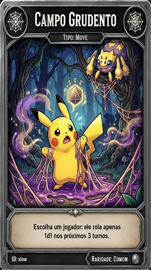
🕸️ Campo Grudento
O jogador escolhido tira sempre 1 no dado nas próximas 3 rolagens.
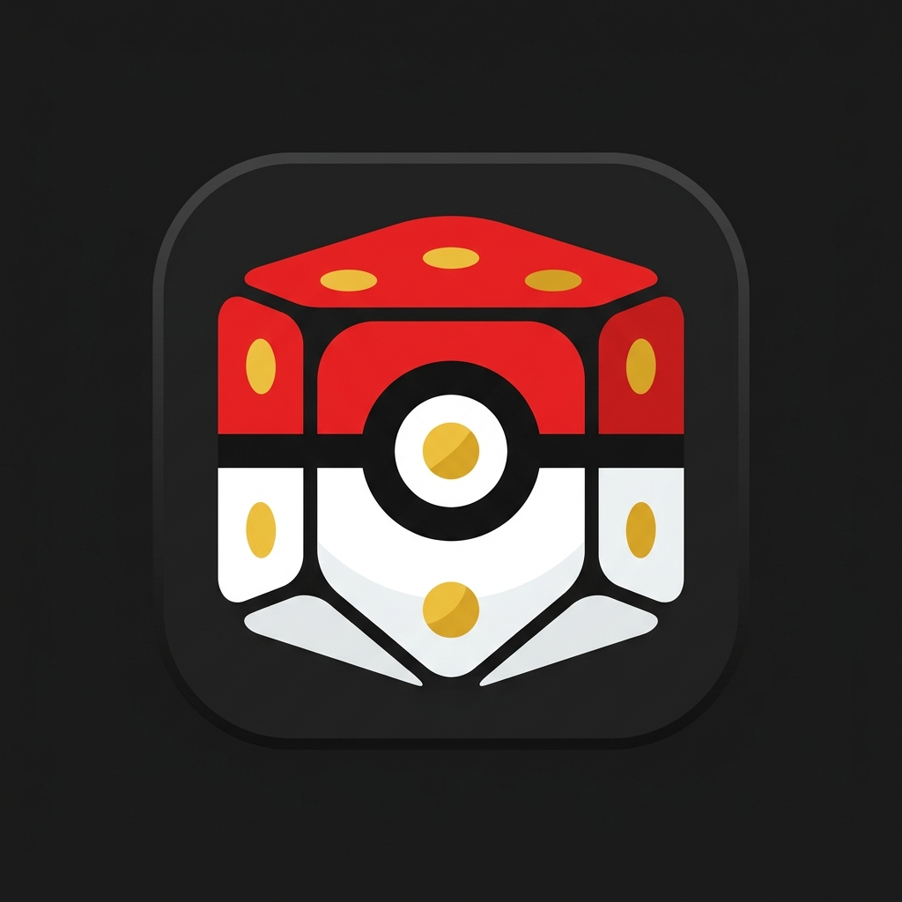
PokéBoardManual do TreinadorAnde pelo tabuleiro, capture Pokémon, use cartas para ajudar você e atrapalhar os rivais, vença os líderes de ginásio e seja o primeiro a juntar todas as insígnias.
Entre na sua conta e escolha Jogar online (crie uma sala ou entre com o código de um amigo) ou Jogar offline (no mesmo aparelho, com bots se quiser). A ordem dos jogadores é sorteada no início.
1 Pokémon inicial sorteado (nível 1), 500G, 6 Pokébolas, 6 Poções, 3 Revives e 5 cartas. Todos saem da cidade inicial, no canto do tabuleiro.
Toque em Iniciar turno. Antes de rolar, você pode usar cartas de tabuleiro e itens da mochila. Depois toque em Rolar dado (1 a 6) e o peão anda sozinho.
Mato, água ou terra: Pokémon selvagem. Cidade: Centro Pokémon e loja. Treinador: batalha contra NPC. Ginásio: batalha contra o líder. Casa ???: evento surpresa. Parou onde está outro jogador: batalha PvP.
Escolha seu Pokémon, ataque, use itens e até 3 cartas por batalha. Enfraqueça o selvagem e jogue uma Pokébola para capturar. Seu time tem no máximo 6 Pokémon.
Ao completar uma volta no tabuleiro você ganha 500G, 2 cartas e +1 nível para todo o time. Vitórias dão XP, ouro e cartas.
Se todos os seus Pokémon desmaiarem, você perde uma vida (se a partida usar vidas) ou volta ao último Centro Pokémon e perde 2 turnos. Com um Revive na mochila, você pode escolher usá-lo e escapar.
Junte as 8 insígnias dos ginásios (4 no mapa Micro). Online, quem chega às 8 ainda pode desafiar o Campeão da Liga para vencer.
Para jogar online você precisa de uma conta. Ela também guarda seu perfil: estatísticas, Pokédex da conta, conquistas e histórico.
Na tela inicial, aba Criar conta: informe e-mail, um nome de treinador (3 a 15 caracteres, único no jogo) e uma senha de pelo menos 6 caracteres. Não há confirmação por e-mail: a conta já fica pronta para entrar.
Aba Entrar: e-mail e senha. O aparelho lembra a sua sessão; para trocar de conta use Sair da conta no menu.
Ainda não existe recuperação de senha pelo jogo. Guarde sua senha em um lugar seguro.
Na tela de login, Jogar com bots abre o modo offline sem precisar entrar. Sem conta, nada é registrado no perfil.
Todos jogam no mesmo aparelho, passando a vez. Em Jogar offline:
.json. Para continuar depois, use Carregar save ou Importar arquivo na tela do modo offline.Em Jogar online, escolha primeiro o avatar da partida (dois jogadores não podem usar o mesmo avatar na mesma sala).
Toque em Criar sala para abrir “Monte sua sala”. Escolha o apelido da sala (até 20 caracteres, único), uma senha opcional e as regras. Nada é criado até você tocar em Gerar sala.
Com senha, só entra quem souber. Quem tentar entrar recebe um pedido de senha; salas com senha aparecem com cadeado nas listas.
Depois de gerada, a sala mostra o resumo das regras e quem já entrou (até 8 jogadores). O anfitrião toca em Iniciar jogo para todos. Para mudar regras, use Voltar e excluir sala: a sala é apagada e você volta à criação com as mesmas escolhas.
Digite o apelido em Código ou apelido da sala e toque em Entrar, ou use Buscar partidas → aba Abertas. Só é possível entrar enquanto a sala está em espera.
Buscar partidas → aba Em andamento → Assistir. Você acompanha como espectador; as cartas dos jogadores ficam ocultas.
Lista as salas em espera ou em andamento das quais você participa ou que criou. Use Reconectar/Voltar à sala, Detalhes e, se você for o anfitrião, Excluir (apaga a partida e o progresso de todos nela).
Mostra status, rodada, de quem é a vez (Na vez), cada jogador com ouro, insígnias, vidas, turnos a perder e time, além das regras e da data de criação.
Se você fechar o jogo no meio de uma partida, o menu mostra “Uma partida está em andamento” com o botão Reconectar. Também dá para voltar por Minhas salas.
As mesmas opções existem no offline e na criação de sala online. Online, elas ficam gravadas na sala e não mudam depois de gerada.
| Opção | Escolhas | O que muda |
|---|---|---|
| Tamanho do mapa | Micro 7×7 · Pequeno 10×10 · Médio 20×20 · Grande 30×30 | Mapas maiores deixam a partida mais longa. O Micro tem só 4 ginásios e termina com 4 insígnias, sem Campeão. |
| Gerações | Gen 1 a Gen 9 (pelo menos uma) | Só aparecem Pokémon (selvagens, iniciais, NPCs, líderes) das gerações marcadas. Um Pokémon não evolui para uma forma de geração desligada. |
| Lendários | Sim · Não · Somente lendários | Sim: lendários raros a partir do nível médio 5. Não: nenhum lendário aparece. Somente: iniciais, selvagens e times de ginásio só com lendários. |
| Mega Evoluções | Sim · Não | Desligadas, somem a Mega Stone da loja, as cartas de Mega Pedra, os selvagens que já vêm com Mega Pedra e as Mega Pedras dos líderes de ginásio. |
| Vidas | 1 · 3 · 5 · Sem vidas (clássico) | Define o que acontece na derrota total. O padrão é 3 vidas. |
| Senha (online) | Opcional | Só entra quem souber a senha. |
Mostra de quem é a vez e a rodada. Quando é a sua vez, ela fica dourada e pulsa com “É a sua vez!”. Toque no nome de quem está jogando para ir até o card dele.
Também na barra de turno: um toque leva direto ao seu card no placar (time, itens, cartas e Pokédex), sem precisar procurar entre os outros.
Em colunas no computador e em carrossel no celular. Cada card mostra avatar, ouro, insígnias, vidas, cartas e o time. O jogador da vez ganha a fita Na vez.
Rodada atual e o nível esperado de NPCs, selvagens e do líder de ginásio, além do tamanho do time inimigo. Ver estatísticas mostra quem mais sofreu cartas e perdeu turnos.
Tudo o que aconteceu, com filtros (Tudo, Cartas, Itens, Economia, Batalhas). Batalhas têm o botão Ver Log de Combate, que abre o registro completo da luta, golpe a golpe. Online, o log de cada batalha fica salvo para a sala inteira.
Painel com quem usou qual carta e contra quem, incluindo cartas bloqueadas.
Consulta rápida dentro do jogo: cartas, itens, missões e resumos de regras. Este manual é a versão completa.
Lixeira (Pokémon soltos), Salvar partida (offline), Checar vez (corrige o turno se a tela travar), Reagir (emotes, online), Pokémon animados e Painel do host (só para o anfitrião ou no offline: ajustes de emergência como dar ouro, cartas, mudar rodada ou evento).
Uma vez por rodada: sem nenhuma Pokébola na mochila, você ganha 1 Pokébola; sem nenhuma carta, ganha 1 carta.
Nas rodadas múltiplas de 10, cada jogador tem 25% de chance de ser sugado até um ginásio que ainda não venceu (e enfrentar o líder); senão, ganha 2 cartas. Quem está perdendo turnos perde o bônus.
Truco (descarte até 6 cartas) e Ajuda Humanitária são aplicados aqui. Veja Eventos globais.
| Situação | Efeito |
|---|---|
| Normal | 1 a 6 casas. |
| Dado Mágico | Você escolhe de 1 a 20. |
| Re-Roll | Dois dados diferentes; você escolhe um. |
| Tênis de Corrida | +6 casas além do dado. |
| Campo Grudento (sofrido) | Sempre 1 nas próximas 3 rolagens. |
| Moon Walker (sofrido) | Anda para trás nas próximas 3 rolagens. |
| Vento a Favor / Areia Movediça | Dado dobrado / dividido por 2 (mínimo 1). |
| Fenda Espacial | O dado teleporta você para uma casa aleatória. |
Cada vez que passa da última casa para a primeira, você ganha 500G (1.000G no Dia de Pagamento), 2 cartas e +1 nível para cada Pokémon do time abaixo do nível 25.
Turnos a perder (por derrota total, Troca Mal-Sucedida, Tremembé…) acumulam. Na sua vez, o jogo mostra “Pulando vez” e passa automaticamente, descontando 1. Os turnos perdidos contam para as missões “Azarão”.
O tabuleiro é gerado a cada partida. Cerca de 60% das casas livres são mato, 20% água e 20% terra. Além disso: 8 ginásios (4 no Micro), cidades (a casa inicial, pelo menos uma por linha e cerca de 10% do mapa), 10% de casas de evento e 10% de treinadores NPC.
| Casa | O que acontece |
|---|---|
| 🌿 Mato 🌊 Água ⛰️ Terra | 80% de chance de um Pokémon selvagem; nos outros 20%, nada aparece. Cada terreno tem seus tipos: Mato: Grama, Inseto, Normal, Veneno, Voador, Noturno. Água: Água, Gelo, Dragão, Fada. Terra: Terra, Pedra, Fogo, Lutador, Elétrico, Psíquico, Fantasma, Aço. |
| 🏥 Cidade | Abre o Centro Pokémon (veja abaixo). |
| 🏛️ Ginásio | Batalha obrigatória contra o líder se você ainda não tem aquela insígnia. Ginásio já vencido: 25% de chance de a estátua teleportar você para um ginásio que ainda falta (com batalha); senão, você ganha 1 carta. |
| ❓ Evento (???) | 15%: um vórtice teleporta você para uma casa aleatória (e ela é ativada). Do restante: 20% de chance de ganhar uma missão; senão, metade das vezes 1 carta e metade 1 item (5% de chance de ser um item raro: Ultra Full Restore, Ultra Max Revive ou Master Ball). |
| 👤 Treinador NPC | Batalha obrigatória contra um treinador (veja a lista abaixo). |
| ⚔️ Outro jogador | Se você parar numa casa ocupada por outro jogador, começa uma batalha PvP contra ele, no lugar do efeito da casa. |
Ao parar numa cidade você escolhe uma destas ações, e o turno termina:
Além disso, Comprar missão (300G) pode ser feito uma vez por visita, sem encerrar o turno. Ver mochila também está disponível.
O time do NPC tem o nível médio da mesa e o tamanho médio dos times. Com as Megas ativadas na partida, cada Pokémon dele que puder Mega Evoluir tem 33% de chance de carregar uma Mega Pedra. Vencer dá o ouro abaixo e 1 carta.
Vitória: 300G + 1 carta
Vitória: 250G + 1 carta
Vitória: 200G + 1 carta
Vitória: 350G + 1 carta
Vitória: 200G + 1 carta
Vitória: 250G + 1 carta
Vitória: 350G + 1 carta
Vitória: 400G + 1 carta
Vitória: 300G + 1 carta
Vitória: 300G + 1 carta
Vitória: 250G + 1 carta
Vitória: 400G + 1 carta
| Mapa | Condição |
|---|---|
| Micro 7×7 | Quem conquistar a 4ª insígnia vence na hora. |
| Demais mapas, offline | Com as 8 insígnias, ao tocar em Rolar dado no seu turno seguinte você é coroado campeão e vence. |
| Demais mapas, online | Com as 8 insígnias, ao tocar em Rolar dado: se ainda não existe Campeão da Liga, você se torna o primeiro e vence. Se já existe, você escolhe entre Desafiar campeão ou rolar o dado e se preparar mais. Vencer o Campeão encerra o jogo com a sua vitória e torna você o novo Campeão. |
Detalhes da batalha final em Ginásios, insígnias e Campeão. Insígnias também podem ser roubadas e perdidas com a carta Novo líder.
| Batalha | Como funciona |
|---|---|
| Selvagem | 1 Pokémon com nível médio da mesa ±2. Pode fugir e capturar. Pode vir segurando um item (30%). |
| Treinador NPC | Time do NPC; não dá para fugir nem capturar. |
| Líder de ginásio | Time do tipo do ginásio, mais forte que o normal. Não dá para fugir nem capturar. O líder troca para um Pokémon sorteado a cada desmaio. |
| PvP | Contra outro jogador. A luta é automática; não dá para fugir nem desistir. |
| Campeão | Batalha final online. Sem itens e sem cartas. |
Em batalhas contra selvagens, NPCs, líderes e Campeão você escolhe qual Pokémon entra. Quando ele desmaia, você escolhe o próximo. Lutam apenas os Pokémon que não estavam desmaiados no início.
Os dois Pokémon atacam; quem tem mais Velocidade ataca primeiro (empate: sorteio).
Poções e Pokébolas. Usar item gasta sua ação: o inimigo ataca em seguida. Revives não podem ser usados em batalha.
Até 3 cartas de batalha por batalha. Veja Cartas.
Mostra o estado do seu time.
Só contra selvagens. Chance entre 40% e 60% (depende de um dado). Se falhar, o inimigo ataca. Fugir com sucesso dá +5 XP ao Pokémon ativo.
Em qualquer batalha menos PvP. Você perde 100G e a desistência conta como derrota total.
Ataca sozinho até alguém desmaiar. Toque de novo para parar.
Cada ataque passa por estas etapas, nesta ordem:
| Etapa | Regra |
|---|---|
| 💨 Esquiva | Chance = (Velocidade do defensor − Velocidade do atacante) ÷ 5, no mínimo 10%. Esquivou: dano zero. A carta Sniper Americano impede a esquiva. |
| 🛡️ Bloqueio | Chance = (Defesa do defensor − Ataque do atacante) ÷ 5, de 0% a 90%. Bloqueou: dano zero. |
| Dano base | Poder = 65% do Ataque + 15% da Velocidade + 20% do HP máximo. Dano = Poder ÷ 5 − Defesa do defensor ÷ 20 (mínimo 1). |
| ⚔️ Maestria de tipo | +1% de dano por Pokémon selvagem daquele tipo que você já derrotou na partida (somando os dois tipos do atacante). |
| ⚡ Crítico veloz | Chance = Velocidade ÷ 8 (%): +5 de dano. |
| 🎲 Dado de combate (d6) | 1: −2 · 2: −1 · 3: 0 · 4: +2 · 5: +3 · 6: +5 (crítico). Com Scope Lens, sempre +5. |
| Vantagem de tipo | Para cada tipo do defensor: super efetivo ×1,75; pouco efetivo ×0,75; neutro ×1. Os fatores se multiplicam (contra dois tipos fracos, ×3,06). Se o atacante tem dois tipos, vale o melhor. Não existem imunidades. |
| 🌍 Evento global | Climas e eventos de batalha multiplicam o dano (veja Eventos). |
| Cartas e Maldição | Super Crítico ×2, Foco Total ×4, Escudo Protetor ÷2 no dano recebido, Maldição ÷2 contra líder/Campeão. |
Todos esses detalhes aparecem no histórico da batalha e no Ver Log de Combate.
Só é possível capturar Pokémon selvagens. Jogue uma bola pelo botão Itens. A chance é calculada assim:
| Parte | Valor |
|---|---|
| Base | 15% |
| HP do alvo abaixo de 60% / abaixo de 15% | +25% / +50% |
| Resistência (soma de HP, Ataque, Defesa e Velocidade ÷ 30) | − |
| Lendário / Shiny | −10% cada |
| Dado da sorte | −10% a +10% |
| Piso (antes da bola) | mín. 15% |
| Great Ball / Ultra Ball | +20% / +40% |
| Zona Safari | +50% |
| Teto | 95% (100% na Zona Safari) |
| Master Ball (item ou carta) | 100% |
| Batalha | Vitória | Derrota |
|---|---|---|
| Selvagem | 150G e 25% de chance de 1 carta | −100G e derrota total. Na Invasão Rocket, em vez do ouro, a Equipe Rocket pode roubar 1 Pokémon (só de quem tem mais de 3). |
| NPC | Ouro do treinador (200 a 400G) e 1 carta | |
| Líder de ginásio | 1.000G e a insígnia | −100G e derrota total |
| Campeão | Vitória na partida | |
| PvP | 30% do ouro do perdedor (se ele estiver sem ouro e você atacou, 300G) | Perde 30% do ouro para o vencedor e sofre derrota total |
Derrota total é quando todos os Pokémon que estavam lutando por você desmaiam (perder uma batalha contra selvagem, NPC, líder ou Campeão), quando você perde um PvP ou quando desiste de uma batalha.
| Situação | Resultado |
|---|---|
| Partida com vidas e você ainda tem mais de 1 | Perde 1 vida. Todo o time é curado e você continua na mesma casa, sem perder turnos. |
| Era sua última vida | Vai para o último Centro Pokémon (a cidade mais recente que ficou para trás na trilha), o time é curado, você perde 2 turnos e as vidas voltam ao máximo. |
| Sem vidas (clássico) | Sempre como “última vida”: último Centro Pokémon, time curado e 2 turnos perdidos. |
Com 1 vida, toda derrota total leva ao Centro Pokémon. Quem usou Tremembé não perde os 2 turnos enquanto o decreto dura. A derrota total também zera o progresso das missões de sequência de vitórias e da missão Mochileiro (quando vai ao Centro).
Se você tiver Revive, Max Revive ou Ultra Max Revive na mochila no momento da derrota total, o jogo pergunta:
A escolha também vale para o defensor de um PvP. Online, o defensor recebe a pergunta no próprio aparelho e tem 20 segundos para decidir; se o tempo acabar, a derrota é aplicada. Bots usam o Revive automaticamente.
Se você sofrer a derrota total num ginásio que ainda não venceu e continuar na casa (por vida ou Revive), no próximo turno você sai andando normalmente, sem ser puxado de novo para a batalha, igual ao efeito da Fumaça Ninja.
Cada partida sorteia 8 dos 18 líderes (4 no mapa Micro) e espalha os ginásios pelo tabuleiro. O time de cada líder é montado com Pokémon do tipo dele, já em forma final, das gerações escolhidas.
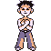
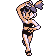
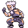
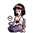
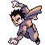
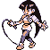
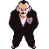
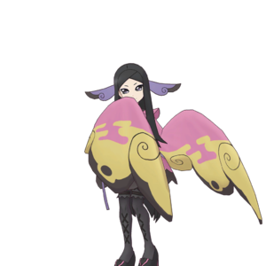
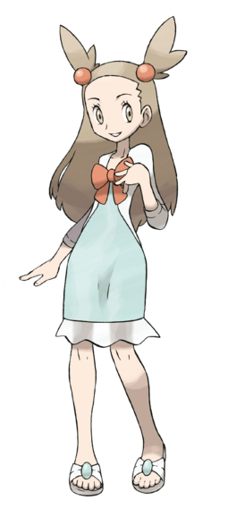
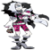
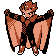
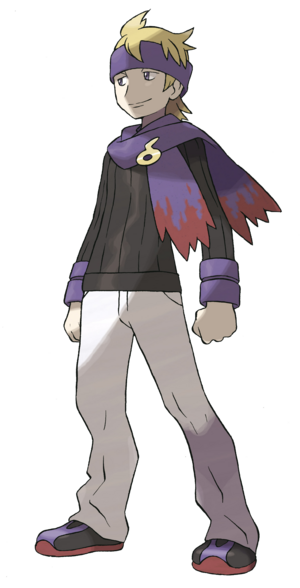
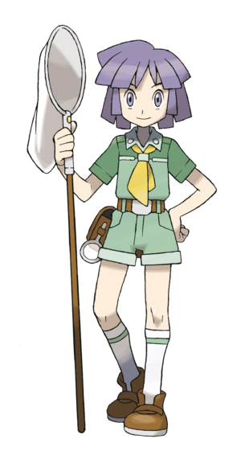
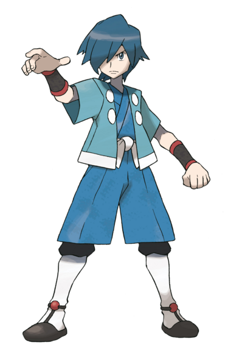
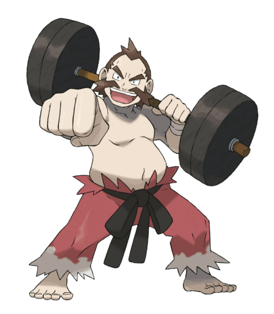
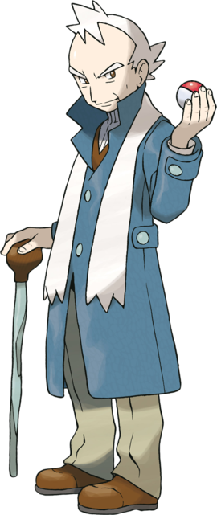
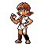
HP, Ataque, Defesa e Velocidade. Cada um soma o valor base da espécie, um bônus genético (0 a 10) e os pontos ganhos por nível.
Cada nível distribui 15 pontos aleatórios entre os status (+5 em todos durante o Surto de Pokérus) e dá +5 de felicidade.
Dado do tabuleiro (o valor tirado, para um Pokémon vivo sorteado), derrubar inimigos (soma dos status ÷ 9), fugir (+5), capturar (+5), volta completa (+1 nível) e Rare Candy (+1 nível).
Nível atual × 8 a 15, conforme o estágio: Pokémon em forma final e lendários precisam de mais XP.
Ao atingir o nível de evolução, o Pokémon evolui na hora e recupera todo o HP. Algumas evoluções dão 1 ou 2 cartas de bônus. Evolução Forçada evolui sem esperar.
Registra vistos, capturados e derrotados de cada espécie. É a base da Ressonância e da Maestria. Evoluir conta como captura da nova espécie.
O que aparece depende do nível médio da mesa: abaixo de 5, só Pokémon de primeiro estágio; de 5 a 9, até o segundo estágio e lendários raros; a partir de 10, todos os estágios. A raridade segue o total de status da espécie: comuns 50%, incomuns 25%, raros 15%, épicos 8% e lendários 2%.
| Bônus | Efeito | Como conseguir |
|---|---|---|
| ✨ Shiny | +20% em todos os status | 3% de chance em cada Pokémon gerado (15% com Lure Shiny); Febre Shiny; Brilho Épico; Vínculo Supremo. O inicial tem 2%. |
| Lendário | +20% em todos os status | Selvagens raros, Febre Lendária, Encontro Lendário. |
| 💖 Felicidade 100% | +5% em todos os status. Protege de O Adeus de Ash, Destruir Mega Pedra e do roubo da Invasão Rocket. | Subir de nível +5, derrubar inimigo +3, equipar item de segurar +5, usar item de cura +1. Desmaiar −10, remover item segurado −5. |
| 🧬 Ressonância | +10% em todos os status por captura extra da mesma espécie na partida (máx. +100%) | Capturar a mesma espécie de novo. Vale nas batalhas. |
| ⚔️ Maestria de tipo | +1% de dano por selvagem daquele tipo derrotado | Vencer selvagens. |
| 🤝 Vínculo Supremo | Vira shiny, felicidade travada em 100%, nunca sai do time por carta ou Rocket, não perde a Mega Pedra | Carta Vínculo Supremo. |
| 💊 Vitaminas | +1 em todos os status, permanente | Loja (500G) e missões. |
“Forte contra” = ×1,75 por tipo do defensor. “Fraco contra” = ×0,75. O que não aparece é neutro (×1).
| Ataque | Forte contra | Fraco contra |
|---|---|---|
| Normal | — | PedraAçoFantasma |
| Fogo | GramaGeloInsetoAço | FogoÁguaPedraDragão |
| Água | FogoTerraPedra | ÁguaGramaDragão |
| Elétrico | ÁguaVoador | ElétricoGramaDragãoTerra |
| Grama | ÁguaTerraPedra | FogoGramaVenenoVoadorInsetoDragãoAço |
| Gelo | GramaTerraVoadorDragão | FogoÁguaGeloAço |
| Lutador | NormalGeloPedraNoturnoAço | VenenoVoadorPsíquicoInsetoFadaFantasma |
| Veneno | GramaFada | VenenoTerraPedraFantasmaAço |
| Terra | FogoElétricoVenenoPedraAço | GramaInsetoVoador |
| Voador | GramaLutadorInseto | ElétricoPedraAço |
| Psíquico | LutadorVeneno | PsíquicoAçoNoturno |
| Inseto | GramaPsíquicoNoturno | FogoLutadorVenenoVoadorFantasmaAçoFada |
| Pedra | FogoGeloVoadorInseto | LutadorTerraAço |
| Fantasma | PsíquicoFantasma | NoturnoNormal |
| Dragão | Dragão | AçoFada |
| Noturno | PsíquicoFantasma | LutadorNoturnoFada |
| Aço | GeloPedraFada | FogoÁguaElétricoAço |
| Fada | LutadorDragãoNoturno | FogoVenenoAço |
| Tipo | Quando usar |
|---|---|
| Movimento | No tabuleiro, na sua vez, depois de Iniciar turno e antes de rolar o dado. |
| Global | Como as de Movimento, mas afetam todos os jogadores. Não podem ser bloqueadas. |
| Batalha | Durante batalhas, até 3 por batalha. Bloqueadas no Campeão e na Tempestade EMP. |
| Automática | Não se usa: fica na mão e dispara sozinha quando você é alvo da carta correspondente. |
Quando alguém usa uma carta contra você, o jogo procura primeiro a defesa específica e, se não houver, a Interferência. A defesa e a carta do atacante são descartadas, e a jogada conta no limite de 3 do atacante. A defesa só é gasta se o ataque teria efeito.
| Carta recebida | Bloqueada por |
|---|---|
| Bolsa furada | Silver Tape, depois Interferência |
| Troca forçada | Pokémon fiel, depois Interferência |
| Novo líder | Líder Velho, depois Interferência |
| Destruir Mega Pedra | Do nada bolinha perdida, depois Interferência |
| Troca Rápida, Campo Grudento, Equipe Rocket, Maldição, Troca Mal-Sucedida, Moon Walker | Interferência |
| No PvP: Ataque Surpresa, Super Crítico, Foco Total, Sniper Americano | Interferência do rival |
| O Adeus de Ash, Espião e cartas Globais | Não podem ser bloqueadas |
Uma carta protegida pelo Cadeado não pode ser roubada nem perdida (Equipe Rocket, Comunismo, Imposto de Renda, Truco, O Grande Assalto). Em troca, ela não pode ser usada, e uma defesa automática protegida não dispara. Toque em Desproteger quando quiser usá-la. Máximo de 3 cartas protegidas.
5 no início, 2 por volta completa, vitórias contra NPCs (1) e selvagens (25%), casas de evento, ginásio já vencido, compra na cidade (500G), evoluções, bônus das rodadas 10/20/30…, suporte de emergência, Ajuda Humanitária, Desafio dos Líderes e missões.
Chance de raridade ao comprar uma carta: Comum 47% · Incomum 27% · Rara 18% · Épica 6% · Lendária 2% (se você puder receber uma lendária; senão, cai na faixa Épica). A mão inicial nunca traz lendárias nem a carta Master Ball.
Na tela de cartas do tabuleiro, na sua vez (cartas protegidas não entram):
Todas as 54 cartas do jogo. Filtre por raridade ou use a busca no topo.

O jogador escolhido tira sempre 1 no dado nas próximas 3 rolagens.
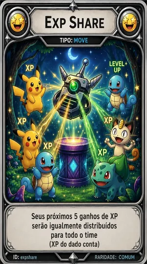
Nos próximos 5 ganhos de XP, cada Pokémon vivo do seu time recebe o valor inteiro (o XP do dado também conta).
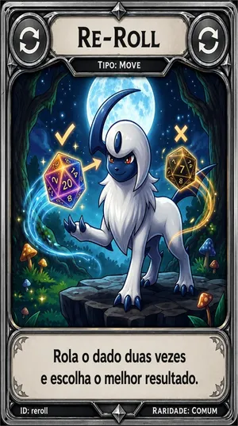
Antes de rolar: o jogo rola dois dados com valores diferentes e você escolhe qual usar.
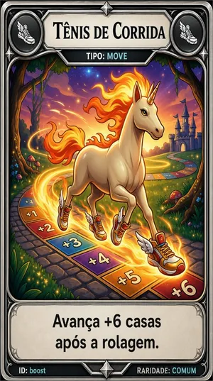
Antes de rolar: anda +6 casas além do resultado do dado nesta jogada.
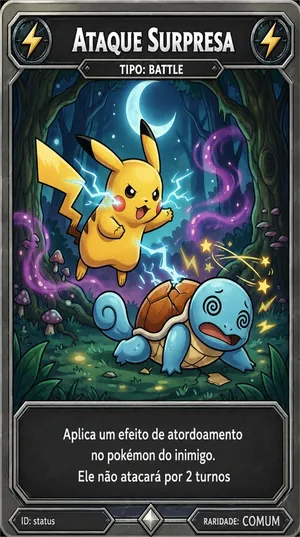
O Pokémon inimigo fica atordoado e não ataca nos próximos 2 turnos (o efeito acaba se ele for trocado).
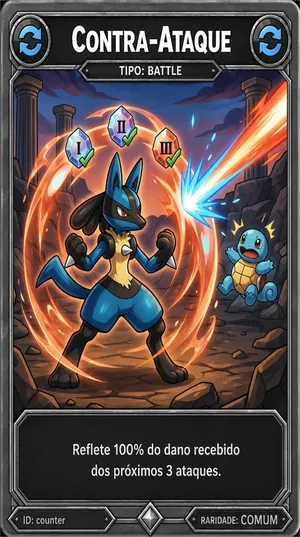
Os próximos 3 ataques que você receber voltam para o inimigo com 100% do dano.
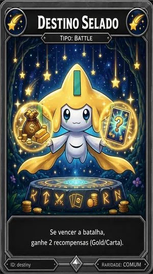
Se você vencer esta batalha, ganha +500G e +2 cartas além da recompensa normal.
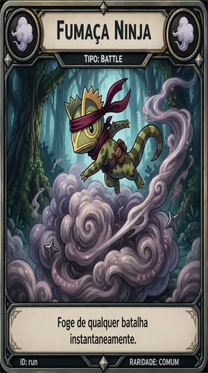
Encerra a batalha na hora, sem penalidade. Num ginásio, no próximo turno você sai andando sem lutar.
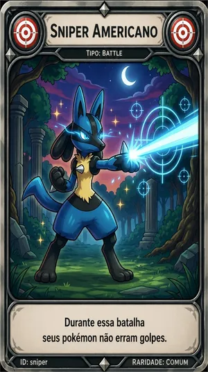
Nesta batalha seus ataques não podem ser esquivados (o bloqueio pela Defesa ainda pode acontecer).
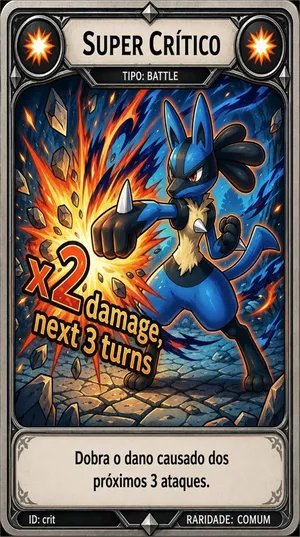
Seus próximos 3 ataques que acertarem causam o dobro de dano.
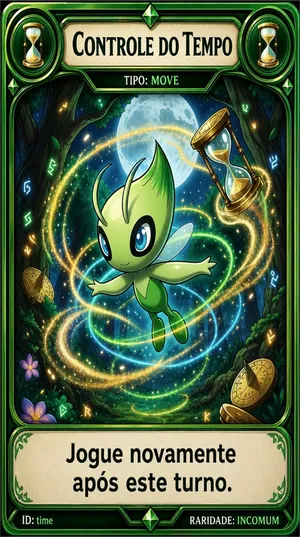
Você joga outra vez logo depois deste turno. Não acumula: um turno extra por vez.
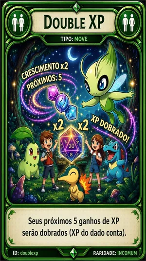
Os próximos 5 ganhos de XP do seu time valem o dobro (o XP do dado também conta).
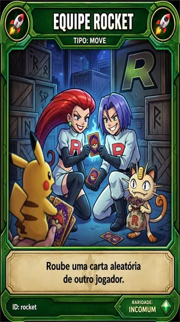
Rouba 1 carta aleatória de outro jogador (lendárias e protegidas pelo Cadeado ficam a salvo).
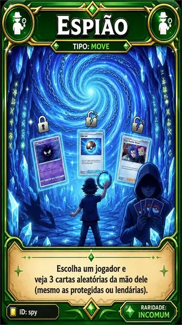
Veja 3 cartas aleatórias da mão de um jogador (inclusive protegidas e lendárias). Não pode ser bloqueada.
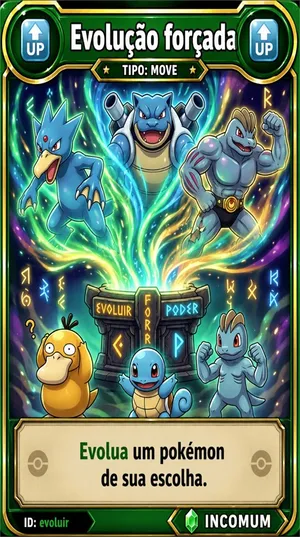
Um Pokémon seu evolui na hora para o próximo estágio, se houver evolução nas gerações da partida.
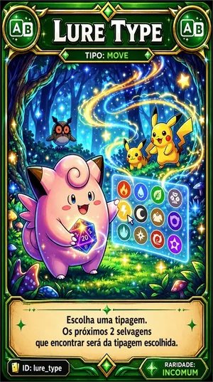
Escolha um tipo: os próximos 2 selvagens que você encontrar serão desse tipo (quando o tipo existe naquele terreno).
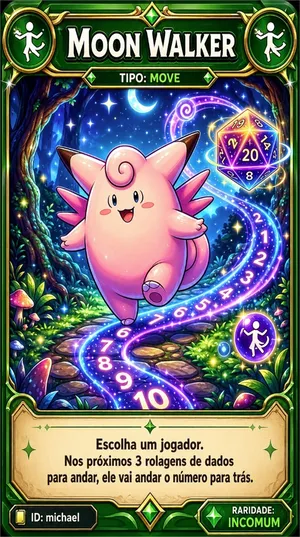
O jogador escolhido anda para trás nas próximas 3 rolagens.
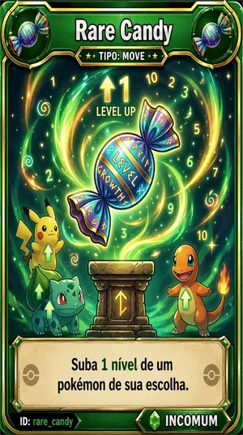
Um Pokémon seu sobe 1 nível (máximo 25).
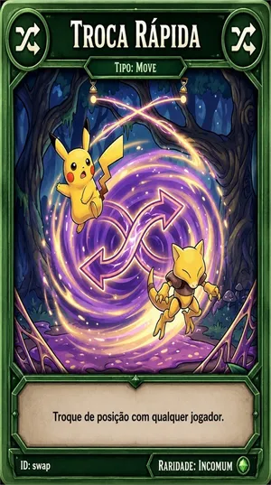
Troque de lugar com qualquer jogador. Seu movimento do turno acaba e a casa onde você chegou é ativada.
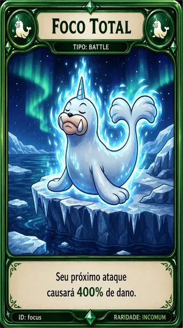
Seu próximo ataque causa 4× o dano.
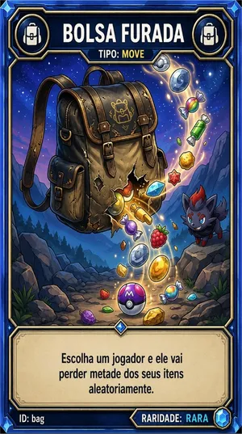
O jogador escolhido perde metade de todos os itens da mochila (no mínimo 1), sorteados.
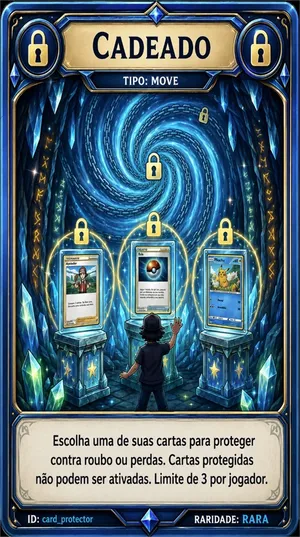
Protege uma carta da sua mão contra roubo e perdas (até 3). A carta protegida não pode ser usada até você desprotegê-la. O Cadeado não protege a si mesmo.
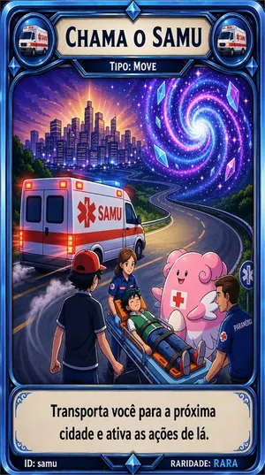
Leva você até a próxima cidade à frente e abre o Centro Pokémon. Substitui a rolagem; se passar pela casa inicial, conta como volta completa.
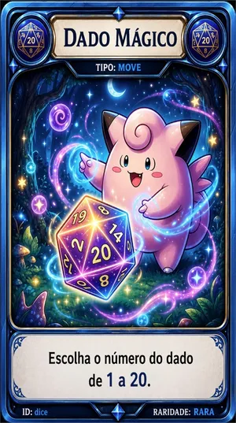
Antes de rolar: escolha o resultado do dado, de 1 a 20.
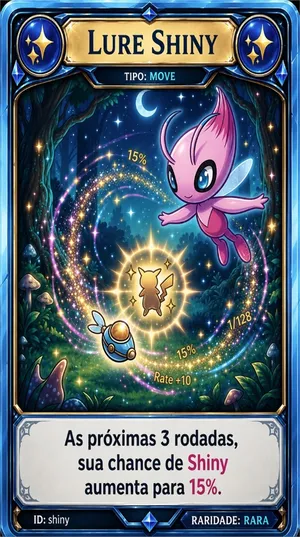
Pelas suas próximas 3 rodadas, a chance de um Pokémon gerado ser shiny sobe de 3% para 15%.
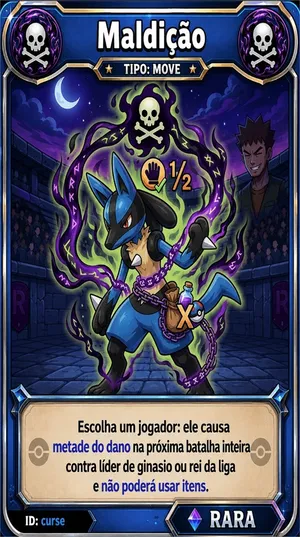
Na próxima batalha do alvo contra líder de ginásio ou Campeão, ele causa metade do dano; no ginásio, também não pode usar itens nem cartas.
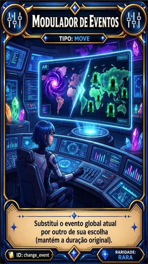
Troca o evento global atual por outro à sua escolha, mantendo o tempo restante (sem evento ativo, o novo dura 5 rodadas).
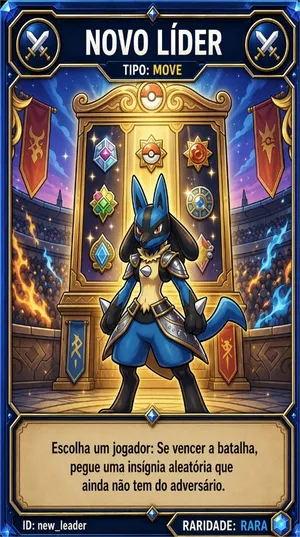
Duelo valendo insígnia contra um jogador: 3 Pokémon sorteados de cada lado, curados. Vencendo, você rouba uma insígnia que ele tem e você não; perdendo, você perde uma insígnia sua. Proibida quando falta só 1 insígnia para você.
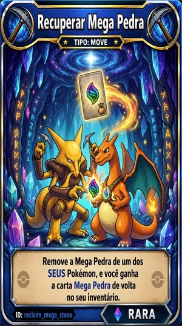
Tira a Mega Pedra de um Pokémon seu e devolve a carta Mega Pedra para a sua mão.
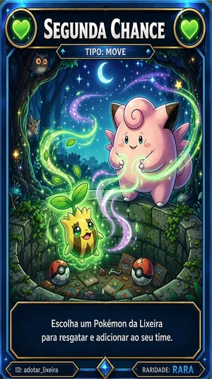
Escolha um Pokémon da Lixeira para o seu time (com o time cheio, você escolhe quem sai). Fechar a Lixeira sem escolher não gasta a carta.
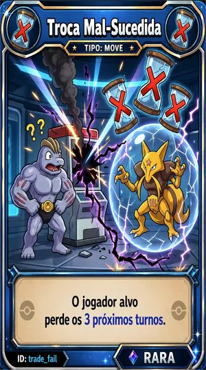
O jogador escolhido perde os próximos 3 turnos.
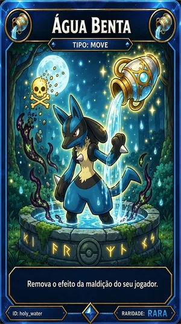
Remove a Maldição de você.
Um Mewtwo do mesmo nível do seu Pokémon ativo entra no lugar dele nesta batalha. Se o Mewtwo cair, seu Pokémon original volta para a luta.
O dano que seu Pokémon recebe cai pela metade, até ele derrotar o oponente atual ou desmaiar.
Só contra selvagens: escolha uma Pokébola, Great Ball ou Ultra Ball da mochila; a captura é garantida (a bola é gasta).
Recupera todo o HP do seu Pokémon ativo.
Em batalha contra selvagem ou treinador NPC: troque um Pokémon seu por um do time adversário.
Dispara sozinha e anula qualquer carta usada contra você no tabuleiro (menos O Adeus de Ash). No PvP, anula Ataque Surpresa, Super Crítico, Foco Total e Sniper Americano do rival.
Dispara sozinha e anula um Novo líder usado contra você.
Dispara sozinha e anula uma Bolsa furada usada contra você.
Todos os jogadores, inclusive você, são levados para casas aleatórias do tabuleiro.
Transforma um Pokémon seu não lendário em shiny (+20% em todos os status, HP restaurado).
Destrói a Mega Pedra de um Pokémon de outro jogador. Não funciona em Pokémon com Vínculo Supremo ou felicidade 100%.
No tabuleiro: equipa uma Mega Pedra num Pokémon seu compatível que não esteja segurando item.
Troque um Pokémon seu por um Pokémon de outro jogador, à sua escolha. Pokémon com Vínculo Supremo não entram na troca.
Dispara sozinha e anula um Destruir Mega Pedra usado contra você.
Dispara sozinha e anula uma Troca forçada usada contra você.
Junta as cartas não protegidas e não lendárias de todos, embaralha e divide igualmente. As que sobrarem na divisão são destruídas.
Todos, inclusive você, perdem metade das cartas não protegidas e não lendárias e metade de cada tipo de item.
Sorteia 3 lendários no nível médio da mesa +2 (máx. 25); escolha um para batalhar. Você ganha uma Master Ball para tentar a captura.
Mande embora 2 Pokémon de outros jogadores (podem ser de jogadores diferentes). Não pode ser bloqueada. Falha contra Vínculo Supremo ou felicidade 100% e nunca tira o último Pokémon de alguém.
Um Pokémon seu vira shiny, fica com felicidade travada em 100%, nunca sai do time por cartas ou pela Equipe Rocket e não perde a Mega Pedra. Se for compatível e estiver sem item, ganha uma Mega Pedra.
Todos os outros perdem todo o ouro, todos os itens e as cartas não lendárias e não protegidas. Você fica com metade do ouro e metade dos itens e cartas, sorteados; o resto é destruído.
Todos os outros jogadores perdem 15 turnos. Durante os seus próximos 15 turnos, uma derrota total não faz você perder turnos.
Compre na Loja de itens das cidades. Na Invasão Rocket os preços dobram. Itens de cura, Revives, Vitaminas, Mega Stone e itens de segurar são usados pela mochila no tabuleiro (na sua vez); Poções e Pokébolas também em batalha.
Cura 20 HP de um Pokémon que não esteja desmaiado.
Cura 60 HP.
Cura 100 HP.
No tabuleiro, cura 100% do HP de todos os Pokémon vivos. Em batalha, cura totalmente o Pokémon ativo.
Fora da batalha, reanima um Pokémon desmaiado com 50% do HP. Também serve para escapar da derrota total.
Reanima com 100% do HP. Também serve para escapar da derrota total.
Reanima todos os desmaiados com 100% do HP. Na derrota total, reanima o time inteiro.
Bola básica (sem bônus na captura).
+20% na chance de captura.
+40% na chance de captura.
Captura garantida.
Equipa num Pokémon compatível para permitir a Mega Evolução. Só aparece com as Megas ligadas.
+1 permanente em HP, Ataque, Defesa e Velocidade de um Pokémon.
+100G cada vez que o Pokémon que a segura derruba um inimigo.
Recupera 10 HP do Pokémon que o segura ao fim de cada rodada da batalha.
O Pokémon que a segura sempre ataca primeiro (se os dois tiverem, vale a Velocidade).
Quando o HP chega a 50% ou menos, recupera 50% do HP máximo. É consumida.
Todo ataque do Pokémon que a segura recebe o bônus máximo do dado de combate (+5).
+10% no poder de ataque do Pokémon que a segura.
+20% de Velocidade para decidir quem ataca primeiro.
Quem ataca o Pokémon que o segura sofre 25% do dano causado.
Capture 2 Pokémon selvagens.
Capture 1 Pokémon do tipo sorteado quando você recebe a missão.
Ande 18 casas sem andar para trás (Moon Walker zera o progresso; ir ao Centro Pokémon por derrota também).
Termine o movimento em Água, Terra e Grama ao longo do jogo.
Derrote 2 Pokémon selvagens.
Bloqueie ou esquive 1 ataque.
Pegue 3 itens em casas de evento.
Termine um turno com 1500G ou mais em caixa.
Perca 5 turnos acumulados.
Vença 3 batalhas seguidas, sem derrota total nem fuga no meio.
Derrote 2 treinadores Rocket Grunt (casas da Equipe Rocket).
Bloqueie 3 ataques acumulados.
Inicie e termine 5 turnos consecutivos mantendo 2500G ou mais.
Capture 1 Pokémon na primeira Pokébola lançada no combate.
Perca 10 turnos acumulados.
Vença 2 batalhas PvP.
Vença 2 NPCs/Líderes sem perder nenhum Pokémon do time na batalha.
Faça Fusão e Sacrifício de cartas na mesma partida.
Vença uma batalha usando um Pokémon com nível inferior ao do oponente.
Capture 3 Pokémon do tipo Água.
Seja sugado pelo vórtice do bônus das rodadas 10, 20, 30… ou levado pelo Furacão Katrina.
Vença uma batalha inteira sem tomar nenhum ponto de dano.
Caia em 4 casas de eventos.
Perca 15 turnos acumulados.
Sobreviva a 5 NPCs/Líderes sem que nenhum Pokémon do time desmaie.
Capture um Pokémon lendário.
Obtenha 30%+ de Ressonância (4 capturas iguais) com um Pokémon.
Vença 3 PvPs seguidos (sem perder nenhum PvP no meio).
Derrote 2 líderes de ginásio seguidos (sem lutar com selvagens/NPCs no meio).
Perca 25 turnos acumulados.
Termine um turno com 8000G ou mais em caixa.
Ataques de Pokémon Fogo e Grama causam +25% de dano; os de tipo Água, −25%.
Ataques de Pokémon Água e Elétrico causam +25%; os de tipo Fogo, −25%.
No início de cada batalha, os Pokémon que não são Pedra, Terra ou Aço (dos dois lados) perdem 10% do HP atual.
Pokémon Gelo causam +50% de dano; todos os outros, −20%. Quem não é Gelo tem 15% de chance de congelar e perder o ataque.
Cada Pokémon selvagem encontrado tem 30% de chance extra de ser shiny.
Com lendários permitidos, cada encontro selvagem tem 30% de chance de ser um lendário (mesmo no começo da partida).
+50% na chance de captura (até 100%) e as Pokébolas não são gastas.
Dobra o ouro de vitórias: selvagem 300G, NPC em dobro, líder 2.000G e volta completa 1.000G.
Quem começa o turno com menos de 200G e menos de 2 cartas recebe 800G e 5 cartas (uma vez por evento).
Preços da loja dobrados. Perder para selvagem ou NPC com mais de 3 Pokémon: a Equipe Rocket rouba 1 deles (Vínculo Supremo e felicidade 100% protegem).
Assim que começa, todos perdem metade das cartas (lendárias e protegidas ficam) e metade de cada item.
Vitórias contra NPC dão 2 cartas; contra selvagens, a chance de carta sobe para 50% e vêm 2.
No início do turno, quem tiver mais de 6 cartas descarta aleatoriamente até ficar com 6 (lendárias e protegidas ficam).
O dado não decide os passos: você é teletransportado para uma casa aleatória (sem volta completa e sem XP do dado).
O resultado do dado é dobrado.
O resultado do dado cai pela metade (mínimo 1). Cartas não evitam.
No PvP, o ouro transferido sobe de 30% para 60%. Pokémon Fantasma e Noturno causam +20% de dano.
Cartas de batalha bloqueadas. Nas cidades só dá para curar: loja, compra de cartas e de missões fechadas.
Todo ataque em qualquer batalha causa o dobro de dano.
Ao fim de cada rodada de batalha, Pokémon que não são Veneno ou Aço perdem 10% do HP máximo (sem chegar a desmaiar por isso).
Todo atacante sofre de volta 30% do dano que causar.
Ao entrar num ginásio, seu time é curado antes da luta. Vencer o líder dá +1 carta.
Ginásios fechados: parar num ginásio não inicia batalha.
Todo XP recebido é dobrado, inclusive o do dado.
Cada nível ganho dá +5 extras em todos os status.
Nenhum Pokémon consegue Mega Evoluir.
Ataques de Pokémon Psíquico e Fada causam +50% de dano.
Casas de evento dão 500G, 1 carta e 1 item aleatório em vez do efeito normal.
Abra pelo seu avatar no menu ou por Meu perfil · Pokédex · Conquistas. O progresso conta nas partidas online e nas offline em que você é o único humano da mesa (com bots), estando logado.
Vitórias, aproveitamento, conquistas e estatísticas somadas de todas as partidas: batalhas, PvP, ginásios, insígnias, capturas, shinies, lendários, evoluções, Megas, cartas e itens usados, casas andadas, derrotas totais, vidas perdidas e Revives salvadores.
Todas as espécies das 9 gerações e as Megas, separadas por geração. Capture ou evolua um Pokémon para registrar a espécie; shinies ficam marcados. O objetivo é pegar todos.
Metas permanentes. Algumas liberam títulos (aparecem abaixo do seu nome) e molduras de avatar. Ao desbloquear, um aviso aparece na hora.
Escolha o avatar padrão, a moldura e o título. Moldura e título aparecem para todos na sala e no tabuleiro.
Partidas terminadas: vitória ou derrota, sala, rodadas, insígnias e o seu time final.
Capture seu primeiro Pokémon.
Registre 50 espécies na Pokédex da conta.
Registre 151 espécies.
Registre 400 espécies.
Capture um Pokémon shiny.
Capture 10 Pokémon shiny.
Capture um Pokémon lendário.
Capture 10 lendários.
Vença uma partida.
Vença 10 partidas.
Termine 10 partidas.
Vença 100 batalhas.
Ganhe 8 insígnias (somando partidas).
Ganhe 40 insígnias.
Vença 10 batalhas contra jogadores.
Evolua 25 Pokémon.
Faça uma Mega Evolução.
Use 100 cartas.
Ande 1000 casas.
Use Revive para escapar de 5 derrotas totais.
Perca 10 vidas e continue jogando.
Manual do Treinador · PokéBoard. As regras deste manual seguem a versão atual do jogo.